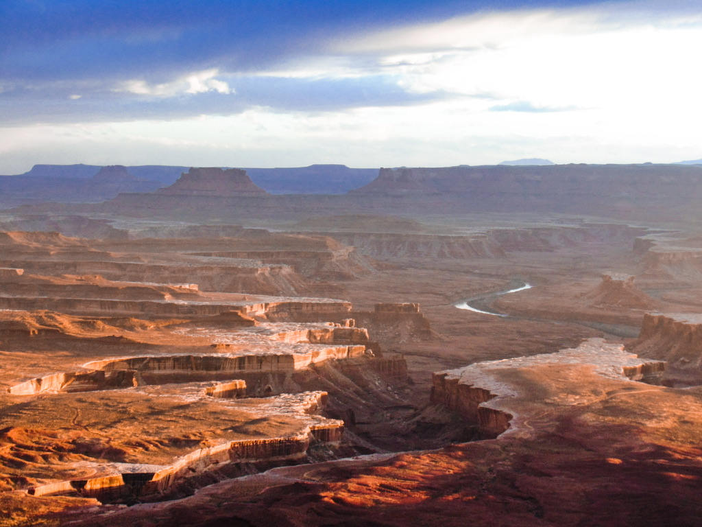

My Photography Journey
Photography has always been a way for me to slow down and notice the details that usually go unseen. Whether I'm out on a trail in the mountains or exploring a new city, my camera is how I record what moves me. What started as a hobby has grown into a genuine craft — one I continue to develop every time I go out shooting.
Featured Shot

One of my favorite captures.
My Shooting Process
-
Scout the location
- Research lighting conditions and golden hour times
- Look for interesting foreground and background elements
-
Set up my gear
- Choose the right lens for the scene
- Dial in aperture, shutter speed, and ISO
-
Shoot and experiment
- Try multiple angles and compositions
- Bracket exposures when lighting is tricky
-
Edit in post
- Adjust exposure, contrast, and color grading
- Export at the right resolution for the intended use
Inspiration
This video captures the kind of cinematic photography I aspire to create:
Photography by the Numbers
An interactive look at local photography trends:

Data sourced from local photography clubs and events.